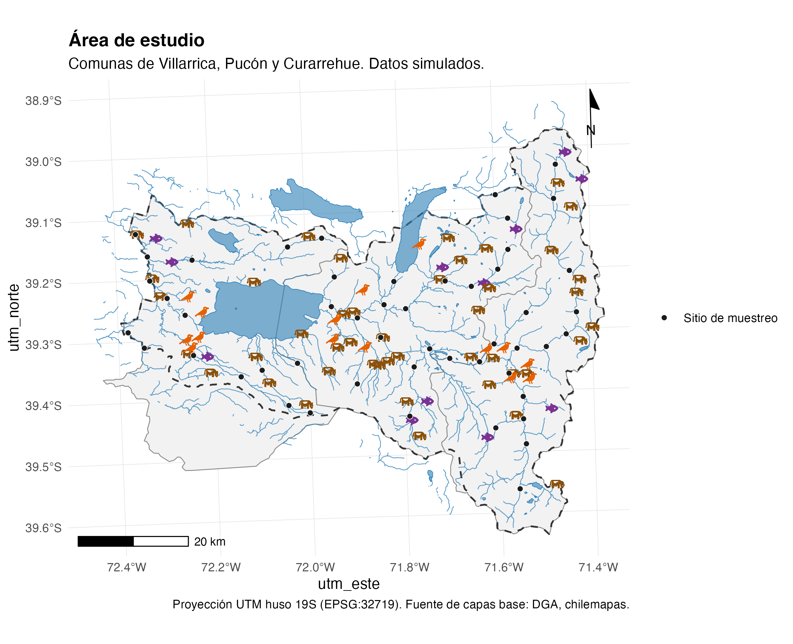

| Indicador | Valor |
|---|---|
| Sitios de muestreo | 50 |
| Visitas | 200 |
| Registros (sitio × visita × método) | 800 |
| Registros con detección válida | 744 |
| Detecciones de visón | 144 |
Visón americano en riberas de La Araucanía
Presencia, detección y distancia a centros productivos
AdvertenciaDatos simulados
Aún no se han recolectado datos de terreno. Todas las tablas, mapas y gráficos de este sitio provienen de una base de datos simulada y tienen fines ilustrativos y metodológicos. No son resultados reales del estudio.
Introducción
Diversos estudios sobre especies invasoras en la Patagonia han identificado que diferentes centros productivos agrícolas y pecuarios brindan recursos clave que favorecen la presencia del visón americano (Neovison vison) en los ríos próximos a estos centros (Failla y Fasola (2019); López et al. (2023)), planteando serios problemas para la conservación de fauna, generando, además, pérdidas económicas para productores rurales (López et al. (2023)). Estudiar cómo las características del paisaje, y, en este caso, la distancia a centros productivos, condicionan la presencia o ausencia del visón es fundamental para identificar zonas de alto riesgo y para diseñar estrategias de control eficientes que prevengan su expansión a otras cuencas hidrográficas.
Preguntas de investigación
- ¿Dónde se encuentra el visón americano en el área de estudio?
- ¿Afecta la distancia a los centros productivos ganaderos la detección del visón en las cámaras trampa?
- Si la afecta, ¿de qué manera?
Hipótesis
A menor distancia a centros productivos ganaderos, mayor probabilidad de detección del visón americano.
Área de estudio
El estudio se ubica desde las proximidades del Lago Villarrica hasta la cordillera, en las comunas de Villarrica, Pucón y Curarrehue (Región de La Araucanía). Incluye los ríos Trancura, Liucura y Pucón con sus afluentes, además del río Toltén aguas abajo del lago. Las coordenadas están en UTM huso 19S.

Métodos
Diseño de muestreo
Se registra la presencia o ausencia de visón en sitios ribereños mediante cuatro métodos de detección: huellas, fecas, cámaras trampa y avistamiento.
Datos simulados
Variables
- Variable respuesta: detección de visón (
deteccion), binaria: 1 si se detectó y 0 si no, en cada registro de un sitio y visita. - Variable predictora principal: distancia al predio ganadero más cercano, según la hipótesis. Se calcula de dos formas: en línea recta (
dist_euc_ganaderia_m) y a lo largo de la red hídrica (dist_rio_ganaderia_m). - Variables de comparación: distancias equivalentes a pisciculturas y granjas avícolas, y a cualquier centro productivo (
dist_euc_centro_m).
El detalle de cada variable está en el diccionario de datos del repositorio (documentos/diccionario_datos.csv).
Datos
Flujo de trabajo, desde los datos crudos hasta la tabla analizable:
- Preparación de capas base (
00_preparar_capas.R) - Simulación de centros productivos (
01_simular_centros_productivos.R) - Simulación del muestreo (
02_simular_muestreo.R) - Limpieza de datos (
03_limpiar_datos.R)
Contenido de la base
| Método | Registros | Registros válidos | Detecciones | % detección |
|---|---|---|---|---|
| huellas | 200 | 200 | 52 | 26.0 |
| camara_trampa | 200 | 144 | 41 | 28.5 |
| fecas | 200 | 200 | 41 | 20.5 |
| avistamiento | 200 | 200 | 10 | 5.0 |
Limpieza de datos
El script 03_limpiar_datos.R estandariza categorías, convierte números y fechas, corrige inconsistencias entre filas de un mismo sitio o visita, y valida rangos. Cada corrección queda registrada.
| Paso de limpieza | Correcciones | Variables afectadas |
|---|---|---|
| 2. espacios | 44 | 3 |
| 2. faltantes | 86 | 7 |
| 3. duplicados | 3 | 1 |
| 4. categorías | 2731 | 15 |
| 5. fechas | 745 | 2 |
| 5. horas | 118 | 1 |
| 5. números | 10899 | 18 |
| 6. consistencia sitio | 107 | 8 |
| 6. consistencia visita | 17 | 1 |
| 7. rangos | 8 | 2 |
Diccionario de datos
NotaVer el diccionario completo
| Variable | Categoría | Descripción | Tipo | Unidad | Nivel |
|---|---|---|---|---|---|
| id_registro | 1. Identificación y diseño | Identificador único de la fila (sitio × visita × método) | entero | NA | registro |
| id_sitio | 1. Identificación y diseño | Identificador del sitio de muestreo | texto | NA | sitio |
| id_transecto | 1. Identificación y diseño | Identificador del transecto de 3 km de ribera asociado al sitio | texto | NA | sitio |
| id_visita | 1. Identificación y diseño | Identificador de la visita (sitio-visita) | texto | NA | visita |
| n_visita | 1. Identificación y diseño | Número de visita dentro de la temporada | entero | NA | visita |
| id_camara | 1. Identificación y diseño | Identificador de la cámara trampa del sitio (solo filas con método camara_trampa) | texto | NA | registro |
| utm_este | 1. Identificación y diseño | Coordenada Este de la cámara trampa / centro del sitio, en la ribera | numérico | m | sitio |
| utm_norte | 1. Identificación y diseño | Coordenada Norte de la cámara trampa / centro del sitio, en la ribera | numérico | m | sitio |
| utm_este_ini_transecto | 1. Identificación y diseño | Coordenada Este del extremo inicial del transecto (sobre el eje del cauce) | numérico | m | sitio |
| utm_norte_ini_transecto | 1. Identificación y diseño | Coordenada Norte del extremo inicial del transecto | numérico | m | sitio |
| utm_este_fin_transecto | 1. Identificación y diseño | Coordenada Este del extremo final del transecto | numérico | m | sitio |
| utm_norte_fin_transecto | 1. Identificación y diseño | Coordenada Norte del extremo final del transecto | numérico | m | sitio |
| rio | 1. Identificación y diseño | Nombre del cauce donde se ubica el sitio (según red hídrica DGA) | texto | NA | sitio |
| cod_cuenca | 1. Identificación y diseño | Código DGA de la cuenca | texto | NA | sitio |
| nom_cuenca | 1. Identificación y diseño | Nombre de la cuenca | texto | NA | sitio |
| cod_subcuenca | 1. Identificación y diseño | Código DGA de la subcuenca | texto | NA | sitio |
| cod_subsubcuenca | 1. Identificación y diseño | Código DGA de la subsubcuenca | texto | NA | sitio |
| nom_subsubcuenca | 1. Identificación y diseño | Nombre DGA de la subsubcuenca | texto | NA | sitio |
| comuna | 1. Identificación y diseño | Comuna donde se ubica el sitio | categórica | NA | sitio |
| fecha | 1. Identificación y diseño | Fecha de la visita (en filas de cámara: fecha de revisión de la cámara) | fecha | AAAA-MM-DD | visita |
| hora | 1. Identificación y diseño | Hora de inicio de la visita | hora | HH:MM | visita |
| observador | 1. Identificación y diseño | Código del observador responsable de la visita | categórica | NA | visita |
| metodo | 1. Identificación y diseño | Método de detección del registro | categórica | NA | registro |
| fecha_inicio_camara | 1. Identificación y diseño | Fecha de inicio del periodo de funcionamiento de la cámara que se revisa en esta visita (solo cámara, visitas 2–4) | fecha | AAAA-MM-DD | registro |
| deteccion | 2. Variable respuesta | Detección de visón (Neogale vison) con el método y visita del registro; NA en instalación de cámara o falla total | binaria | NA | registro |
| tipo_evidencia | 2. Variable respuesta | Tipo de evidencia registrada cuando hubo detección | categórica | NA | registro |
| confiabilidad | 2. Variable respuesta | Confiabilidad de la identificación de la evidencia (baja: posible confusión con otra especie) | categórica ordinal | NA | registro |
| n_evidencias | 2. Variable respuesta | Número de evidencias independientes (huellas, fecas, eventos fotográficos, avistamientos) | entero | NA | registro |
| longitud_tramo_m | 2. Variable respuesta | Longitud de ribera efectivamente recorrida (métodos de transecto) | numérico | m | registro |
| horas_busqueda | 2. Variable respuesta | Horas de búsqueda en el transecto (métodos de transecto) | numérico | h | registro |
| dias_camara | 2. Variable respuesta | Días efectivos de funcionamiento de la cámara en el periodo (solo cámara) | entero | días | registro |
| estado_camara | 2. Variable respuesta | Estado de la cámara en la revisión (solo cámara) | categórica | NA | registro |
| motivo_falla_camara | 2. Variable respuesta | Motivo de la falla de la cámara, si la hubo | texto | NA | registro |
| dist_euc_piscicultura_m | 3. Distancia a centros productivos | Distancia euclidiana (línea recta) a la piscicultura más cercana | numérico | m | sitio |
| dist_euc_avicola_m | 3. Distancia a centros productivos | Distancia euclidiana a la granja avícola más cercana | numérico | m | sitio |
| dist_euc_ganaderia_m | 3. Distancia a centros productivos | Distancia euclidiana al predio ganadero más cercano | numérico | m | sitio |
| dist_euc_centro_m | 3. Distancia a centros productivos | Distancia euclidiana al centro productivo más cercano de cualquier tipo | numérico | m | sitio |
| dist_rio_piscicultura_m | 3. Distancia a centros productivos | Distancia a lo largo de la red hídrica hasta el punto del cauce más cercano a la piscicultura más cercana | numérico | m | sitio |
| dist_rio_avicola_m | 3. Distancia a centros productivos | Distancia a lo largo de la red hídrica hasta el punto del cauce más cercano a la granja avícola más cercana (no incluye el tramo terrestre) | numérico | m | sitio |
| dist_rio_ganaderia_m | 3. Distancia a centros productivos | Distancia a lo largo de la red hídrica hasta el punto del cauce más cercano al predio ganadero más cercano (no incluye el tramo terrestre) | numérico | m | sitio |
| dist_rio_centro_m | 3. Distancia a centros productivos | Distancia a lo largo de la red hídrica al centro productivo más cercano de cualquier tipo | numérico | m | sitio |
| tipo_centro_cercano | 3. Distancia a centros productivos | Tipo del centro productivo más cercano (euclidiana) | categórica | NA | sitio |
| id_centro_cercano | 3. Distancia a centros productivos | Identificador del centro productivo más cercano (euclidiana); ver data/raw/centros_productivos.csv | texto | NA | sitio |
| n_centros_500m | 3. Distancia a centros productivos | Número de centros productivos (cualquier tipo) a ≤ 500 m | entero | NA | sitio |
| n_centros_1km | 3. Distancia a centros productivos | Número de centros productivos (cualquier tipo) a ≤ 1 km | entero | NA | sitio |
| n_centros_3km | 3. Distancia a centros productivos | Número de centros productivos (cualquier tipo) a ≤ 3 km | entero | NA | sitio |
| dens_centros_3km_km2 | 3. Distancia a centros productivos | Densidad de centros productivos en el buffer de 3 km (n / 28,27 km²) | numérico | centros/km² | sitio |
| n_pisciculturas_3km | 3. Distancia a centros productivos | Número de pisciculturas a ≤ 3 km | entero | NA | sitio |
| n_avicolas_3km | 3. Distancia a centros productivos | Número de granjas avícolas a ≤ 3 km | entero | NA | sitio |
| n_ganaderias_3km | 3. Distancia a centros productivos | Número de predios ganaderos a ≤ 3 km | entero | NA | sitio |
| prod_piscicultura_cercana_ton | 3. Distancia a centros productivos | Producción anual de la piscicultura más cercana (euclidiana) | numérico | t/año | sitio |
| cabezas_ganaderia_cercana | 3. Distancia a centros productivos | Número de cabezas del predio ganadero más cercano (euclidiana) | entero | cabezas | sitio |
| aves_avicola_cercana | 3. Distancia a centros productivos | Número de aves de la granja avícola más cercana (euclidiana) | entero | aves | sitio |
| cob_veg_riberena_pct | 4. Sitio y ribera | Cobertura de vegetación ribereña en la franja de ribera del transecto | numérico | % | sitio |
| ancho_franja_riberena_m | 4. Sitio y ribera | Ancho medio de la franja de vegetación ribereña | numérico | m | sitio |
| densidad_veg | 4. Sitio y ribera | Densidad de la vegetación ribereña (categoría visual) | categórica ordinal | NA | sitio |
| cob_dosel_pct | 4. Sitio y ribera | Cobertura de dosel sobre la ribera (densiómetro) | numérico | % | sitio |
| tipo_ribera | 4. Sitio y ribera | Grado de intervención de la ribera | categórica | NA | sitio |
| sustrato_ribera | 4. Sitio y ribera | Sustrato dominante de la ribera | categórica | NA | sitio |
| pendiente_ribera_grados | 4. Sitio y ribera | Pendiente media de la ribera | numérico | grados | sitio |
| refugio_troncos | 4. Sitio y ribera | Presencia de troncos o acumulaciones de madera como refugio | binaria | NA | sitio |
| refugio_rocas | 4. Sitio y ribera | Presencia de rocas o bolones con cavidades como refugio | binaria | NA | sitio |
| refugio_madrigueras | 4. Sitio y ribera | Presencia de madrigueras o cavidades en raíces | binaria | NA | sitio |
| orden_strahler | 4. Sitio y ribera | Orden de Strahler del cauce | entero | NA | sitio |
| ancho_cauce_m | 4. Sitio y ribera | Ancho mojado medio del cauce | numérico | m | sitio |
| caudal_m3s | 4. Sitio y ribera | Caudal estimado durante la visita | numérico | m³/s | visita |
| permanencia_agua | 4. Sitio y ribera | Régimen de permanencia del agua | categórica | NA | sitio |
| pct_bosque_nativo_1km | 5. Paisaje (buffer 1 km) | Porcentaje de bosque nativo en un buffer de 1 km | numérico | % | sitio |
| pct_plantacion_1km | 5. Paisaje (buffer 1 km) | Porcentaje de plantaciones forestales en un buffer de 1 km | numérico | % | sitio |
| pct_agricola_1km | 5. Paisaje (buffer 1 km) | Porcentaje de uso agrícola y praderas en un buffer de 1 km | numérico | % | sitio |
| pct_urbano_1km | 5. Paisaje (buffer 1 km) | Porcentaje de uso urbano / construido en un buffer de 1 km | numérico | % | sitio |
| pct_otros_1km | 5. Paisaje (buffer 1 km) | Porcentaje de otras coberturas (matorral, agua, suelo desnudo) en un buffer de 1 km | numérico | % | sitio |
| dist_poblado_m | 5. Paisaje (buffer 1 km) | Distancia euclidiana al poblado de referencia más cercano | numérico | m | sitio |
| poblado_cercano | 5. Paisaje (buffer 1 km) | Nombre del poblado de referencia más cercano | categórica | NA | sitio |
| dist_camino_m | 5. Paisaje (buffer 1 km) | Distancia al camino más cercano | numérico | m | sitio |
| dens_caminos_1km | 5. Paisaje (buffer 1 km) | Densidad de caminos en un buffer de 1 km | numérico | km/km² | sitio |
| altitud_msnm | 5. Paisaje (buffer 1 km) | Altitud del sitio | numérico | m s.n.m. | sitio |
| conectividad_riberena | 5. Paisaje (buffer 1 km) | Proporción de ribera con vegetación continua 2 km aguas arriba y abajo (0–1) | numérico | proporción | sitio |
| lluvia_48h_mm | 6. Covariables de detección | Precipitación acumulada en las 48 h previas a la visita | numérico | mm | visita |
| dias_desde_lluvia | 6. Covariables de detección | Días desde la última lluvia ≥ 1 mm | entero | días | visita |
| temperatura_c | 6. Covariables de detección | Temperatura del aire al inicio de la visita | numérico | °C | visita |
| nivel_rio | 6. Covariables de detección | Nivel del río respecto de su nivel típico en la temporada | categórica ordinal | NA | visita |
| sustrato_busqueda | 6. Covariables de detección | Sustrato predominante donde se buscaron huellas y fecas (solo métodos huellas y fecas) | categórica | NA | registro |
| experiencia_obs_anios | 6. Covariables de detección | Años de experiencia del observador en rastreo de mamíferos | numérico | años | visita |
| presencia_nutria | 7. Otras especies y contexto | Registro de nutria / huillín (Lontra provocax) con el método y visita del registro | binaria | NA | registro |
| presencia_zorro | 7. Otras especies y contexto | Registro de zorro (Lycalopex spp.) con el método y visita del registro | binaria | NA | registro |
| presencia_perro | 7. Otras especies y contexto | Registro de perros domésticos en la ribera | binaria | NA | registro |
| presencia_ganado_ribera | 7. Otras especies y contexto | Registro de ganado (o sus signos) en la ribera | binaria | NA | registro |
También está disponible como archivo: documentos/diccionario_datos.csv.
Resultados (ilustrativos)
Nota
Esta sección usa datos simulados. Sirve para mostrar cómo se presentarán los resultados cuando existan datos reales.
Exploración de los datos
Presencia de visón y distancia a centros productivos
Discusión y próximos pasos
Reproducibilidad
Todo el código y los datos están en el repositorio de GitHub. Para regenerar la base de datos simulada, ejecuta scripts/ejecutar_todo.R desde la raíz del proyecto.
Referencias
Failla, Mauricio, y Laura Fasola. 2019. VISÓN AMERICANO: UN NUEVO INVASOR DEL RÍO NEGRO, PATAGONIA ARGENTINA. https://doi.org/10.31687/saremmn.19.26.2.0.28.
López, Ronar, B. Clapperton, y Gonzalo Medina-Vogel. 2023. A global review of the American mink (Neovison vison) removal techniques - Patagonia as a case study for their potential application. https://doi.org/10.4067/s0717-65382023000100043.